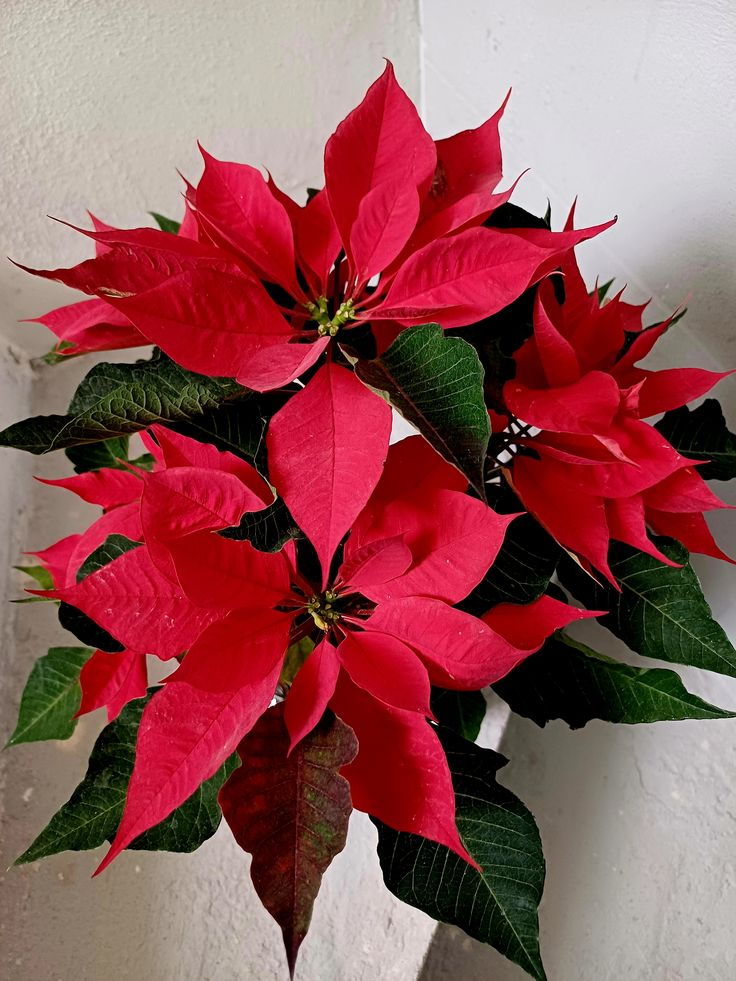

La flor de Pascua (Euphorbia pulcherrima) es un arbusto o árbol pequeño de hoja caduca. Sus flores grandes y de color rojo intenso, muy contrastantes con las hojas, le han valido para convertirse en una de las plantas más vendidas como símbolo de la Navidad. Sin embargo, hay que tener cierta precaución, puesto que su savia puede producir irritación al contacto con los ojos y otras mucosas.
Tiene un aroma muy suave o casi imperceptible.
Necesita mucha iluminación indirecta para mantener sus colores vivos.
Puede recibir algunas horas de sol suave por la mañana.
Riego moderado, manteniendo la tierra ligeramente húmeda.
En temporadas frías necesita menos agua.
Evitar encharcar la tierra y protegerla de corrientes de aire frío.
Retirar hojas secas o dañadas para mantenerla saludable.
La poda después de la floración ayuda a estimular nuevos brotes.
La Flor de Pascua es uno de los símbolos más populares de la temporada navideña.
Sus “flores” rojas en realidad son hojas modificadas llamadas brácteas.